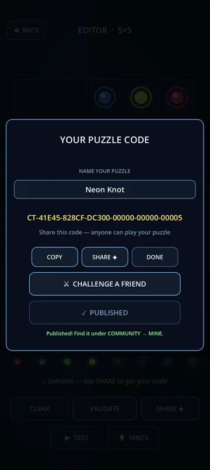
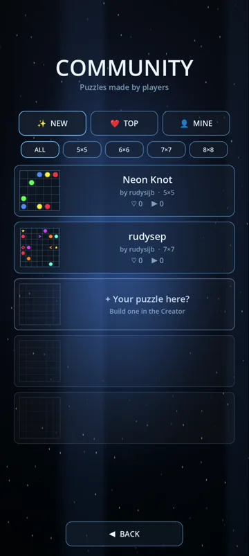

📅 28 October 2026 · ⏱ 6 min read · ✍️ Grounded Studio
A few weeks ago we wrote about how we designed the Puzzle Editor. In the "what got cut" section there was a confident line: no gallery of community puzzles. Too much server work, too much moderation, and it would compete with sharing puzzles with your actual friends.
Well. We changed our minds.
Share codes worked. People made puzzles and sent them to friends and family. But a really good puzzle would reach three people and then stop. That felt like a waste.
A share code reaches the people you already know. Some puzzles deserve a bigger audience. So the Creator now has a second exit: next to sending a code to one friend, you can publish your puzzle to every Circuit Trace player.


💡 Why the TEST step is required. The solver can prove a puzzle is solvable, but not that it's fair to a human. Making every maker beat their own board first is the simplest quality filter we could think of, and it keeps the feed free of "technically possible" nightmares.
Open CREATOR → COMMUNITY and you'll find three tabs:
Size filters (5×5, 6×6, 7×7, 8×8) let you pick a quick warm-up or a real brain-burner. Every card shows the puzzle's name, its maker, the grid size and two numbers: ♡ likes and ▶ plays.
Tap a card to play it. When you solve it, the game asks if you enjoyed it. One tap gives the maker a like. Those likes are what push a puzzle up in TOP, so a good puzzle from a brand-new player can end up at the top of the list.
A public feed needs a few guard rails, and we kept them simple:
There are no comments and no chat, on purpose. The only thing players can send each other is a like, and that's the way we want it.
We hand-made 500 puzzles. That sounds like a lot until you meet a player who has perfected all of them. The Community means Circuit Trace never really runs out: every day there are new boards made by people who know the game as well as we do, and sometimes better.
And if you've ever looked at a level and thought "I could make a nastier one than this", now's your chance to prove it.
Learn more about the tools on the Puzzle Editor page, or install Circuit Trace and publish your first puzzle today.